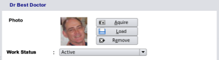
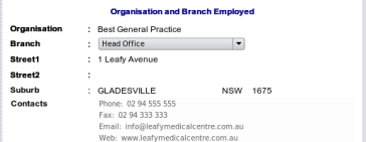

Selecting a Workplace
Work status
The employee's work status is selected from the drop down combo list and can be
- Active
- On Leave
- Departed Organisation
- Locum

Place of work
The employee's place of work always defaults to head office.
You may select any of the branches of the organisation
from the drop down combobox to change this to any branch. Remember that you will have to add new branches to your
organisation using the 'Other Contacts' module which you can select from the main sidebar buttons.
